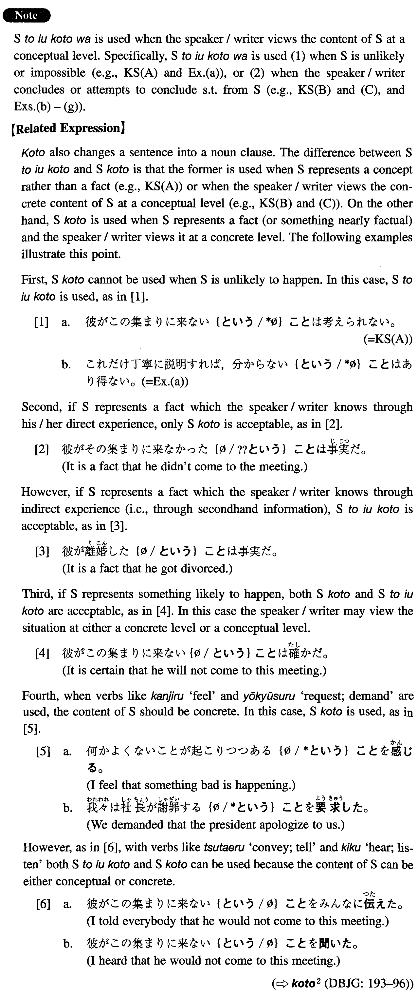

←
DoJG
→
ということは
(I. 480)
Example sentences
(ksa).
彼がこの集まりに来ない
ということは
考えられない。
It is unthinkable that he won't come to this meeting.
(ksb).
手紙が戻って来た
ということは
彼女はもうこの住所にはいないということだ。
The fact that the letter came back means that she no longer lives at this address.
(ksc).
彼が真面目に日本語を勉強していない
ということは
本気で日本で仕事をする気がないのだ。
The fact that he is not studying Japanese seriously means that he is not serious about working in Japan.
(a).
これだけ丁寧に説明すれば、分からない
ということは
あり得ない。
If we explain it this thoroughly, it is impossible that they won't understand it.
(b).
空がこんなに赤い
ということは
何かよくないことが起こる前兆かもしれない。
This red sky (literally: That the sky is this red) might be an omen that something bad will happen.
(c).
彼が金を貸してくれた
ということは
私は彼に信用されているということだ。
The fact that he lent me money means that I am trusted by him.
(d).
言うことを聞かない
ということは
体罰を与えるしかないということだ。
The fact that he doesn't listen to us means that there is no alternative but to punish him physically.
(e).
私がこれだけ言っても分からない
ということは
どういうことなんでしょう。
What does it mean that he doesn't understand me even though I have talked to him such a lot?
(f).
彼女がパーティーをする
ということは
試験に通ったのだ。
That she is having a party must be because she passed the exam.
(g).
彼が毎日授業に来ている
ということは
勉強を続けることにしたのだろう。
The fact that he is attending the class every day probably means that he has decided to continue studying.
Formation
Sinformal
ということは
返事がない
ということは
The fact that there is no reply
